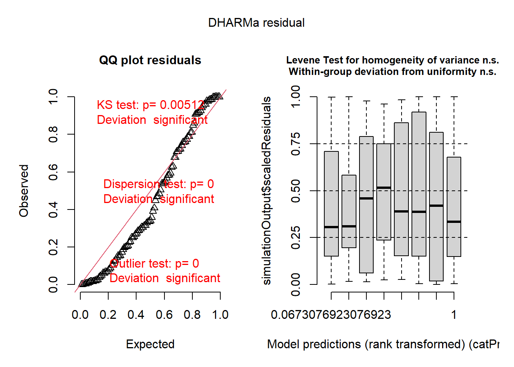
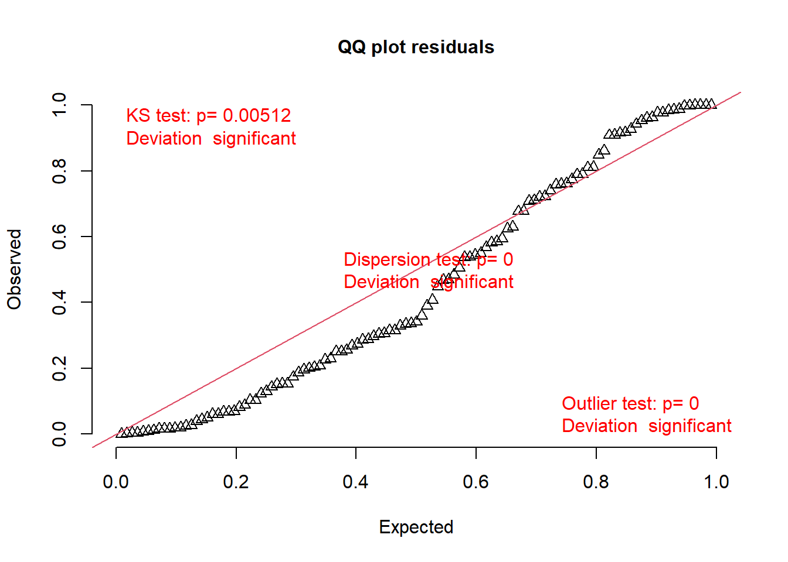
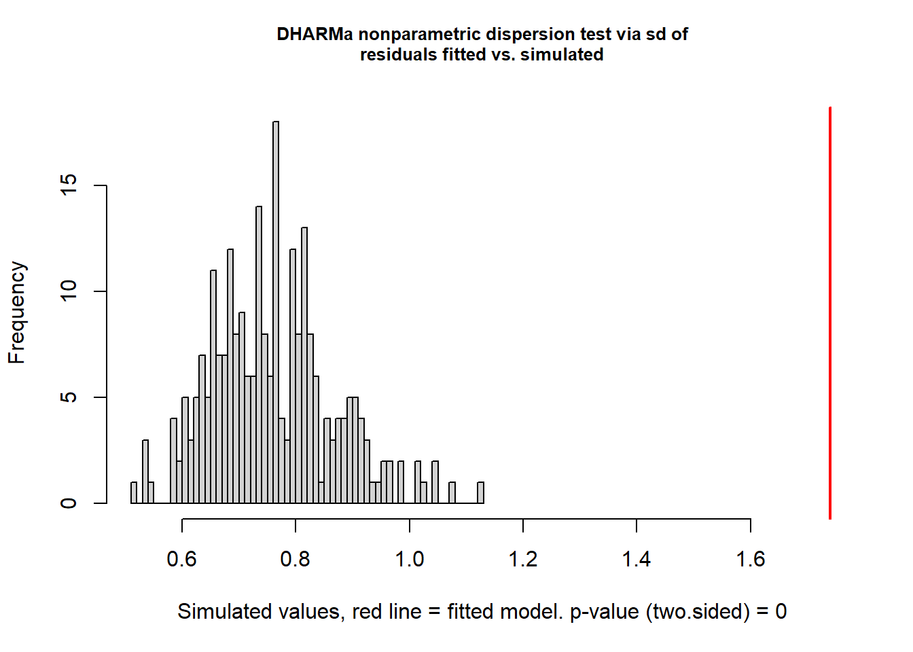
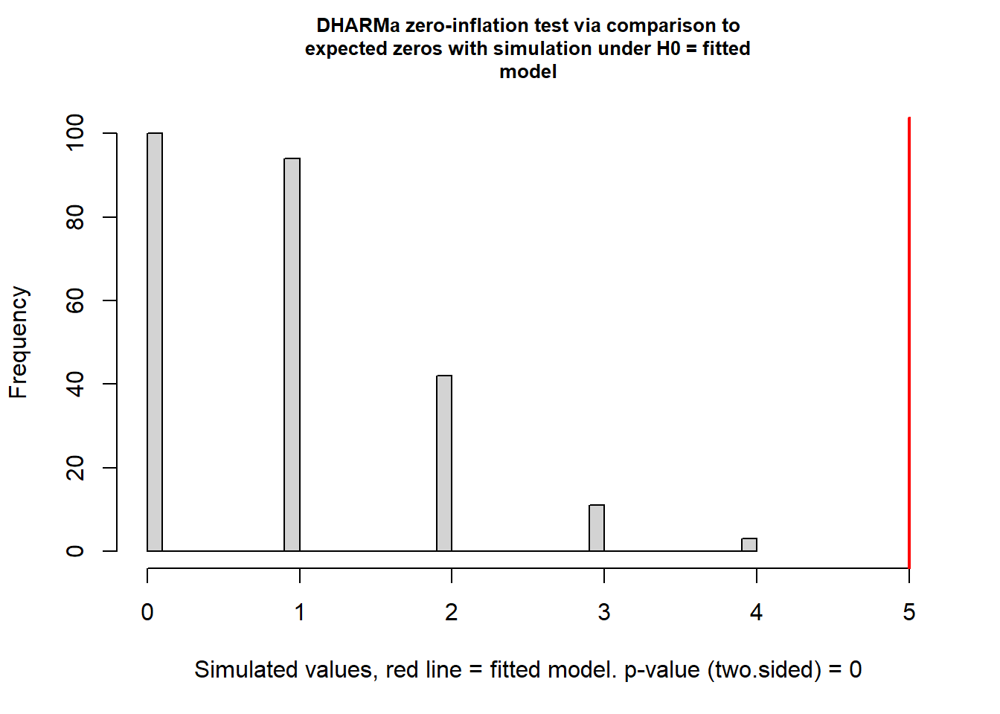
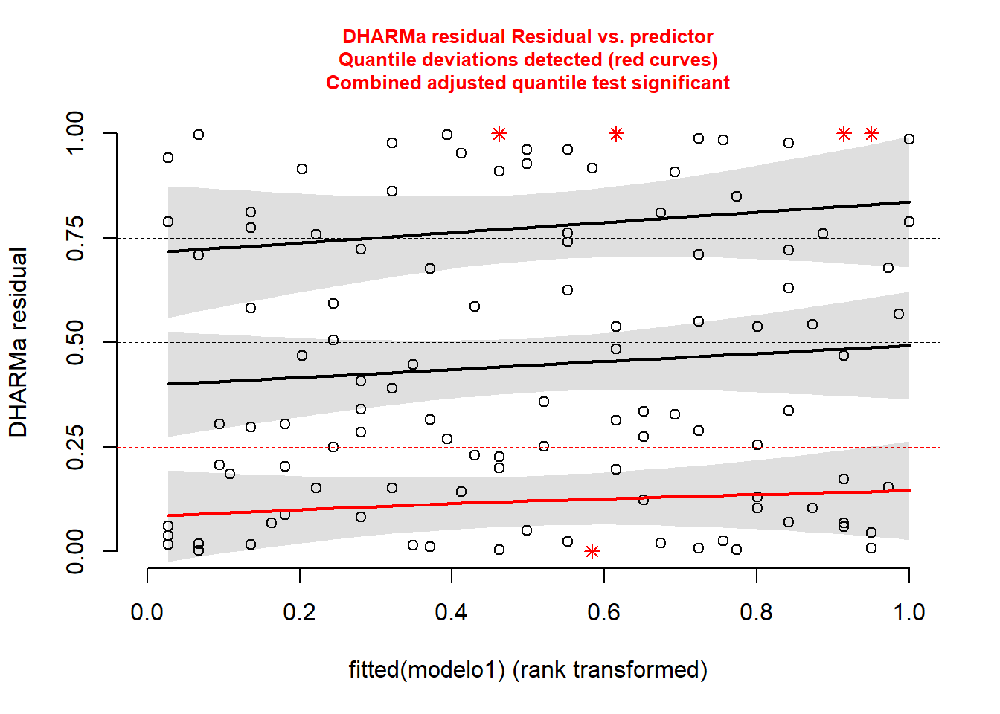
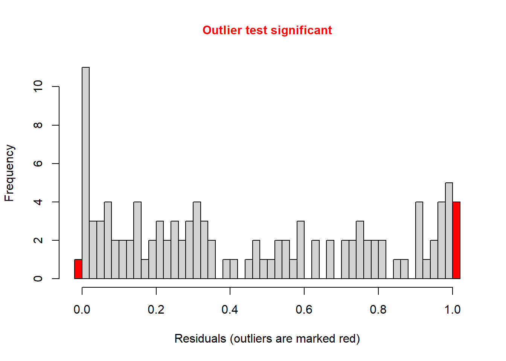

En los modelos animales de neurodesarrollo, la serotonina actúa como un modulador trófico fundamental en la estructuración de los circuitos límbicos y corticales durante las etapas postnatales tempranas [cita]. En ratones, la ventana crítica comprendida entre los días postnatales 2 y 14 (P2–P14) se caracteriza por una elevada sensibilidad del circuito bidireccional entre la corteza prefrontal (CPF) y el núcleo dorsal del rafe (NDR) a los niveles de serotonina en la hendidura sináptica [cita]. Diversos estudios han demostrado que la elevación transitoria de serotonina durante este período sensible - por ejemplo, mediante la administración neonatal del inhibidor selectivo de la recaptación de serotonina fluoxetina (FLX) - altera el refinamiento de estas conexiones, traduciéndose en la adultez en una hiperactividad del NDR frente a eventos estresantes y en la consolidación de un fenotipo comportamental de tipo ansioso [cita].
A pesar del conocimiento sobre este efecto persistente, el rol modulador específico que ejerce la actividad de la CPF durante esa ventana crítica en la impronta del circuito aún no está completamente dilucidado. Para abordar esta interrogante, este trabajo evalúa el efecto de la inhibición quimiogenética (tecnología DREADDs/CNO) de las neuronas de la CPF durante el desarrollo neonatal. Específicamente, se analiza si atenuar la actividad prefrontal durante el tratamiento con fluoxetina previene el desarrollo del fenotipo ansioso en la etapa adulta. Dicho fenotipo se evaluó mediante la prueba del Laberinto Elevado en Cruz (EPM), un modelo válido para medir ansiedad en roedores donde el número de entradas a los brazos abiertos funciona como indicador del nivel de ansiedad.
Objetivos
Los objetivos planteados para este estudio son los siguientes:
Determinar el efecto de la inhibición de la Corteza Prefrontal sobre el fenotipo tipo ansioso causado por la administración de Fluoxetina.
Evaluar la existencia de respuestas diferenciales al tratamiento con Fluoxetina según el sexo de los individuos.
Hipótesis y predicciones
Como punto de partida, sabiendo que el aumento de serotonina durante el desarrollo induce un fenotipo tipo ansioso, se hipotetiza que el grupo tratado con Fluoxetina presenta comportamientos de tipo ansioso, por lo que se espera que el grupo FLX SAL presente una disminución en el número de entradas a brazos abiertos en el EPM respecto al grupo SUC SAL.
Una vez establecido el fenotipo de interés, con el objetivo de estudiar el efecto de la inhibicion de la CPF, la hipotesis principal de este estudio es que su inhibición previene el desarrollo de los comportamientos de tipo ansioso en los ratones adultos que fueron tratados con Fluoxetina durante su desarrollo, por lo que se espera que el grupo FLX CNO presenta un mayor número de entradas a brazos abiertos en el EPM respecto al grupo FLX SAL.
Por último, se contempla que hay evidencia bilbiográfica (cita) a favor de que las hembras suelen presentar mayor resiliencia ante trastornos psiquiátricos, por lo que tambien se hipotetiza que la Fluoxetina tiene un efecto menos marcado sobre las hembras, por lo que se espera que las hembras del grupo FLX SAL presentarán un número significativamente mayor de entradas a brazos abiertos en el EPM que los machos del grupo FLX SAL.
Metodología
Se trabajó con 111 ratones de cepa C57 provenientes de 20 camadas, a los cuales se les administró diariamente entre P1 y P14: Fluoxetina o sacarosa (vehículo) por vía oral, y CNO o solución salina vía inyección en la corteza prefrontal. Si bien la administración de los tratamientos es a nivel individual, la asignación de la combinación de tratamientos fue realizada aleatoriamente a nivel de la camada; por ende, la camada es la unidad experimental.
A cada ratón se le aplicó en edad adulta (PX) una batería de tests, entre los cuales se encuentra el Elevated Plus Maze (EPM, Laberinto elevado en cruz). La prueba del EPM evalúa el comportamiento de tipo ansioso en roedores basándose en el conflicto innato entre la motivación exploratoria y la aversión a los espacios abiertos y elevados. Un menor número de entradas a los brazos abiertos refleja la evitación del riesgo y se interpreta como un fenotipo de tipo ansioso, mientras que un incremento en las entradas indica un efecto protector o ansiolítico.
Es así como el número de entradas a brazos abiertos en 10 minutos (duración del test) se definió como la variable de respuesta, donde cada ratón es la unidad observacional. Como variables explicativas fijas se incluyeron el tratamiento con Fluoxetina, el tratamiento con CNO y el sexo, las cuales están cruzadas entre sí por lo que se analizó la interacción entre ellas. Además, se incluyó a la camada como variable explicativa de efecto aleatorio porque se encuentran anidadas en la interacción de los tratamientos de Fluoxetina y CNO, y los ratones están anidados en camada.
El número de entradas a los brazos abiertos en 10 minutos se analizó utilizando un Modelo Lineal Generalizado Mixto, utilizando inicialmente una distribución Poisson con función de enlace log. Debido a la presencia de sobredispersión en el modelo Poisson, se analizaron los modelos Binomial Negativa , Conway-Maxwell-Poisson, Tweedie y Efectos Aleatorios a Nivel Individual (OLRE) y finalmente se utilizó una distribución Binomial Negativa. El análisis de los residuales se efectuó utilizando el paquete ‘DHARMa’ (Hartig, 2020). Se efectuó selección de modelos mediante AIC. Todos los análisis se efectuaron con R (R Development Core Team).
Los datos se encuentran en el archivo EPM Tam +Mili - Hoja 1.csv
Diccionario de variables
sexo: sexo del ratón (hembra; macho); factor.
camada: n° que identifica la camada de origen de cada ratón; factor.
tratamiento: tratamiento recibido por toda la camada (SUC SAL; SUC CNO; FLX SAL; FLX CNO); factor.
ID: código que identifica a cada ratón individual; factor.
Brazos_abiertos_entradas: n° de entradas a brazos abiertos en 10 minutos; integer.
Base de datos original
Además de las variables de interés para este análisis, la base de datos original contiene otras variables que fueron registradas durante el experimento.
A partir de la base de datos original se seleccionaron las variables de interés para este estudio, renombrando la base de datos utilizada para el análisis como datos.v2. Además, la variable camada se transformó de numérica a categórica (factor), a su vez que la variable Brazos_abiertos_entradas se transformó de numérica a discreta (integer), ya que así lo requiere el análisis.
datos$Brazos_abiertos_entradas <-as.integer(datos$Brazos_abiertos_entradas)datos$camada <-as.factor(datos$camada)datos.v2 <- datos %>%select(-c(marca, ID, Brazos_cerrados_entradas, Brazos_cerrados_tiempo))str(datos.v2)
Se utilizó el test de ANOVA tipo III debido a que los grupos de combinación de los factores se encuentran desbalanceados.
Diagnóstico: sobredispersión
residuos_m1 <-simulateResiduals(modelo1) # Simulamos residuos con DHARMaplot(residuos_m1)

testUniformity(residuos_m1) # Test uniformidad

Asymptotic one-sample Kolmogorov-Smirnov test
data: simulationOutput$scaledResiduals
D = 0.16396, p-value = 0.005118
alternative hypothesis: two-sided
testDispersion(residuos_m1) # Test dispersión

DHARMa nonparametric dispersion test via sd of residuals fitted vs.
simulated
data: simulationOutput
dispersion = 2.2922, p-value < 2.2e-16
alternative hypothesis: two.sided
testZeroInflation(residuos_m1) # Test inflación en ceros

DHARMa zero-inflation test via comparison to expected zeros with
simulation under H0 = fitted model
data: simulationOutput
ratioObsSim = 5.6054, p-value < 2.2e-16
alternative hypothesis: two.sided
plotResiduals(residuos_m1, form =fitted(modelo1)) # Residuos frente a valores ajustados

testOutliers(residuos_m1) # Test Outliers

DHARMa bootstrapped outlier test
data: residuos_m1
outliers at both margin(s) = 5, observations = 111, p-value = 0.02
alternative hypothesis: two.sided
percent confidence interval:
0.00000000 0.02702703
sample estimates:
outlier frequency (expected: 0.0063963963963964 )
0.04504505
Un estadístico de dispersión significativamente mayor a 1 y las desviaciones en el Q-Q plot de DHARMa indican que la varianza observada supera lo esperado bajo el modelo de Poisson. Por lo tanto, se decidió continuar el análisis ajustando con otros modelos que incorporen un parámetro adicional de dispersión.